Tell me about any recent project-
you worked on using Paithan
- Random Recruiter on call

My online friends made fun of me because I didn't have a mic.
So I made my own mic using my Game Console.
That mic evolved into a node for my voice assistant.

I was unable to afford a microphone, so I made use of my PS Vita as a microphone and ended up using Dear ImGui to make a custom client app for my PS Vita to connect with my computer that is running my custom voice assistant using an Ollama model and lots of algorithms, rules and fuzzy logic.
Initially I made a single node version of this using my laptop and its inbuilt mic. You can check the below video.
Table of contents →
- Setting up the Environment
- Sending Audio over WiFi
- Server Setup
- Voice Assistant (alter-ego)
- Client App
- Demo Video on YouTube
Setting up the Environment
- My PS Vita was the only device I had which had a mic and could stay on my desk for a long time. Also, my PSV is
hacked/jailbrokenand can run custom code. Therefore, I decided to use it. - I first installed vitasdk, which is the environment to make homebrew apps for PSV. I grabbed the code for sample apps from the Official GitHub and compiled a hello world program to check if it would run. After compiling, it produced a
.vpkfile which works like an Android.apkfile in design. They both are fancy zip files with rules for where the files should be copied to, etc.
Once I moved the file to my PSV via FTP and installed it, I could see the hello world program working.

Hmmm...
Those Hexadecimal numbers?
Seems like I can transfer it to my PC via WiFi to make a DIY wireless Mic to make calls.
- The hello world program worked, similarly I found the sample code for using the mic to make a volume meter. I compiled and installed it. It was working.
- And that's how this epic journey began.
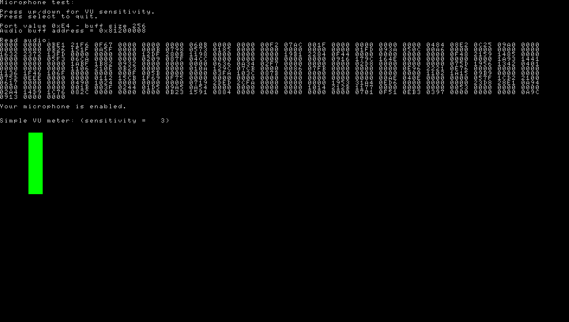
the microphone data">Sending audio via WiFi
- I copied the boilerplate code from the samples to setup a network. I used
SCE_NET_SOCK_DGRAMto setup a UDP network. I chose UDP because I first wanted to check if PSV's2.4 GHz 802.11n WiFi(it does not match true 802.11n speeds though, I only get a max of around 2 megabytes/sec)is good enough for modern standards. Surprisingly, it worked very well → given my router is literally above my computer monitor. - Connecting something via wifi requires an
IP Address. Initially I had hardcoded the IP Address of my computer, but since I also use my laptop sometimes, it was not ideal to hardcode. So I used file operations to read the IP Address from a file instead:
→sceNetInetPton(SCE_NET_AF_INET, SERVER_IP, &server_audio.sin_addr)
→server_audio.sin_port = sceNetHtons(SERVER_PORT) #define NET_PARAM_MEM_SIZE (1*1024*1024)→ This is how much space is allotted for the networking stack of the entire program.1*1024*1024here means 1 MB → networking stack RAM.
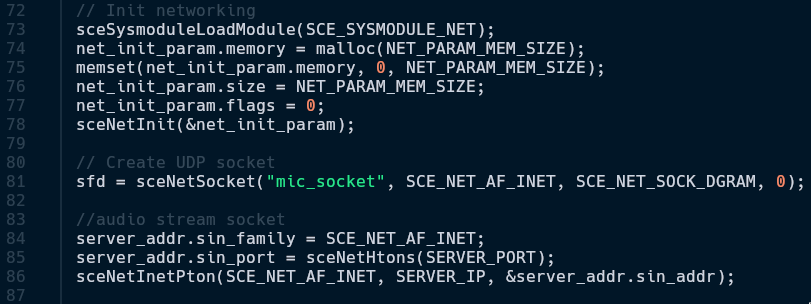
I used port 2012 because I had this feeling of impending doom when I was writing the code for this.
Therefore -> 2012.
(。﹏。) don't ask...
- After this, I created a socket called
mic_socketat port2012. sceNetSendto(sock, cmd, strlen(cmd), 0,(SceNetSockaddr*)server_addr, sizeof(*server_addr)). Now that the WiFi initialization is done, this is the function used to do the real WiFi communication.- I could have implemented TCP here, but I honestly saw almost no upsides to using TCP in my case. Let's say I setup this socket to be TCP. If I walk a bit far away from my router, it would guarantee the data reaching the server no matter what. But this is a Real-Time System. We cannot afford packets to arrive in late and form a huge queue and cause a Buffer Delay with worse latency. That's why I stayed with UDP despite its inconsistency.
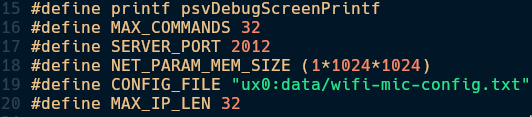
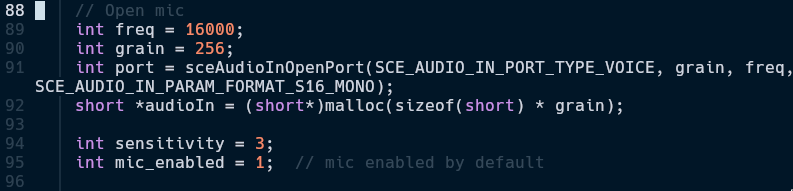
やった
Math time
(ﾐ^ᆽ^ﾐ)
- Since in mic definitions,
SCE_AUDIO_IN_PARAM_FORMAT_S16_MONO
→ S16 means 16-bit audio and MONO means single channel audio
→ It means each sample is 2 bytes.int grain = 256,shortis 2 bytes,
Payload size is 512 bytes
Ideal network speed required for this is:「16,000 samples/sec ÷ 256 samples/sec」= 62.5 packets/sec「62.5 packets/sec x 512 bytes」 = 32,000 bytes/sec
Which is 256 kbps, which is entirely doable by PSV. - If even one of this packet misses due to me being far away from router, the server will just drop the extra packets and only consider the live packets. Whereas, if I was using TCP, it would have stacked up a huge buffer and made everything very jittery.
- This system so far behaves like a raw Walkie-Talkie. A future improvement I would like to add is usage of
libopusas that would make the required speed of 256 kbps go down to 32 kbps, 8x smaller size.
Server Setup (The Receiver End)
Only Walkie.
No Walkie-Talkie yet.
Until I implement 2 way communication.
(｡╯︵╰｡)
- The microphone audio of my PSV was now audible on my headphones. To use this as a normal microphone, I could simply open PAVU (PulseAudio Volume Utility) and set input device to a software sink, named Walkie.
- In pacat, I used
AUDIO_FORMAT = 's16le'(signed 16-bit little Endian) and other values from earlier along with other values like IP Address, Socket port number, number of channels, etc. - Now that the basics were working, I thought of using vosk, a lightweight speech recognition library in python I had first seen in BugsWriter's YouTube channel.
- Vosk is an ASR program that can convert speech to text. The model size for English is around 40 MB, which is really tiny. I used it and it worked really well, despite being a very low end lightweight model. I went with vosk and not whisper because this is a voice assistant that runs at all the time, using whisper would take like 1 GB of my VRAM for the whole day. Upon that, I had a few tricks up my sleeve, check here
- Every voice assistant has to talk back. I experimented with many TTS Engines and finally decided on using Piper TTS, a lightweight TTS engine that sounds more natural than minimalistic ones like espeak-ng. In the future I thought of training a piper model with my own voice, but I need a good microphone for it. Or maybe I'll come up with an alternative method to do it. I was using the libritts_r voice model from the models released by rhasspy.
- Now that the assistant can hear and speak, it was time to give it some logic/rules to work with. Here's a basic function for using piper and playing the audio. I use dunst as my notification manager to show notification on my desktop in case I'm not using headphones.
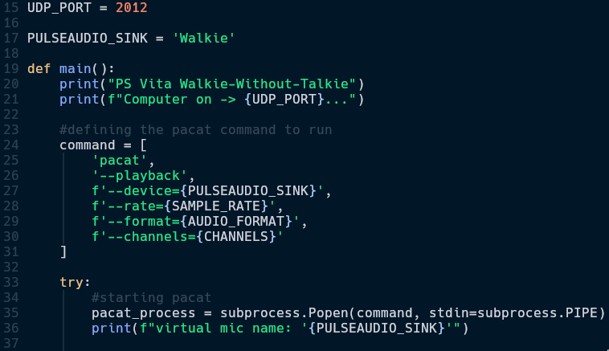
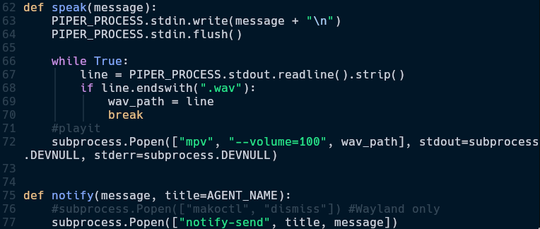
Voice Assistant (alter-ego)
It's called alter-ego because this project was heavily inspired by Chihiro from Danganronpa.
I then made a few rules like "open browser": lambda: (speak("Opening browser"), send2vita("Opening browser"), notify("Opening Browser"), subprocess.Popen(["zen-browser"]))
"open firefox"→ If user says "open firefox" then: do somethingspeak("Opening browser")→ It says, "opening browser" in a human-like voicesend2vita("Opening browser")→ Currently a placeholder function for a future upgradenotify("Opening Browser")→ Displays a notification on the desktopsubprocess.Popen(["zen-browser"])→ Runs the actual command using subprocess
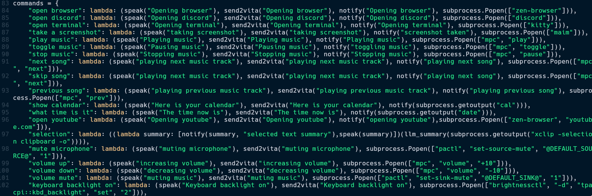
Here are some more example commands which demonstrate the assistant being able to do system level tasks like changing volume, brightness, keyboard backlight, taking a screenshot, opening YouTube, etc.
But the assistant was not perfect when I tried to use it. Since vosk converts human speech to English, a slight difference in accent could make it misunderstand the command and not do anything at all, as it's not defined in it's command dictionary. Therefore, I implemented a Fuzzy Logic selection method using RapidFuzz to make sure it can narrow down what the user has said to something in the command dictionary.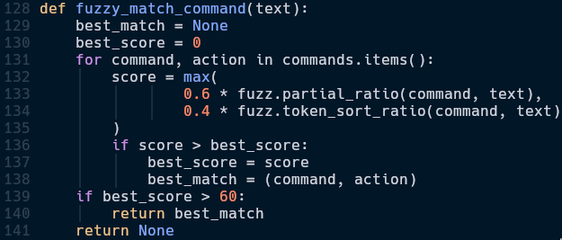
Fuzzy Logic means checking how similar 2 strings are, instead of a strict binary output like both are same or both are not the same. It gives a score on how similar the 2 strings are.
Simple, effective,
elegant
ヽ(´▽｀)/
- I can say something like "open browser please" and the fuzzy matcher will match it with every single command and realise that it is an 80% match to the "open browser" command.
- It uses Levenshtein distance → How many steps it takes to change from command to input text.
fuzz.partial_ratio(command, text)→ partial_ratio() means it checks partially. For example, I could say something like "open browser please" and it would still execute "open browser" command.fuzz.token_sort_ratio(command, text)→ token_sort_ratio() means it checks for words without checking their order. For example, I could also say "browser open" and it would still execute "open browser" command.- I calculated the weighted average scores from both the fuzzy matching functions and gave a higher priority to
fuzz.partial_sortas from my experiments, 0.6:0.4 was the sweet spot. if score > 60: return best_match→ If matching score is above 60, accept it and run the command. 60 because PSV microphone is not very good and 60 was the sweet spot where it was working well.
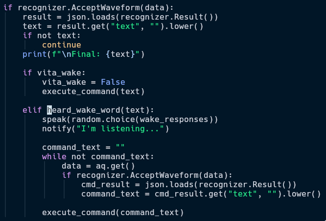
A voice assistant needs to respond by sound, not by us pressing a button
This was done because once I was yelling at myself "shut up" and it fuzzy matched it to "shutdown" and shutdown my PC...
- Vosk is set to transcribe everything every time. If it ever hears the word hey, it will start listening for commands. Otherwise, it will not run any commands.
- If it hears the Wake Word, it speaks back and I can tell it to do anything in the command dictionary.
- There are a few special commands like
selectionwhere I can select some text and ask the assistant to explain about the selected text. For this, I used Ollama. The specific model I used isQwen 2.5 0.5b. It's a tiny and very capable model for this use case.
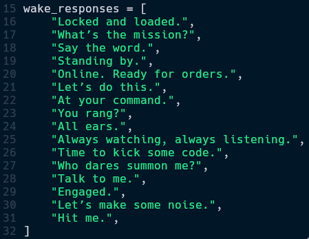
A voice assistant needs a personality. These are the things it says when it detects a wake word.
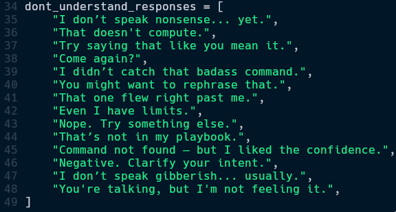
It says one of these if fuzzy match score is below 60.
- I also implemented a second socket: cmd_sock where instead of voice always, commands can be sent from the PSV using buttons as well. For this one, I used port 2013. It listens for commands from the PSV and carries out that instruction.
- I didn't use the same socket because if I put two types of data in one stream, it would add unnecessary tasks like parsing and identifying which part of the data stream is the voice stream and which is the data stream.
Client App
- PSV is home to many homebrew UI libraries. First I tried using the OpenGL (by Team Khronos) implementation in PSV → VitaGL (Ported by Rinne).

it's basically my test code which i use to test graphical capabilities of various hardware. yes, it runs everywhere, like doom.
- I was successfully able to port my synthwave.h library (written in C) to PSV as seen in the image below.
- I soon felt the limitations of vanilla OpenGL for designing an UI. Therefore I tried using ImGui (Ported by Rinne, again) to create a suitable UI. Here are the standout features of the client program.
- I added a few colors but I could not decide on a color scheme → I made a dynamic 2 color palette which can be set easily.
- Designed a simple VU meter using RMS to display volume levels in a circle.
- Sensitivity of Microphone is adjustable in 10 levels.
- Command center where command can be selected instead of having to say commands verbally.
- Used inbuilt gyroscope to identify tilt and add a parallax effect to match a sci-fi aesthetic.